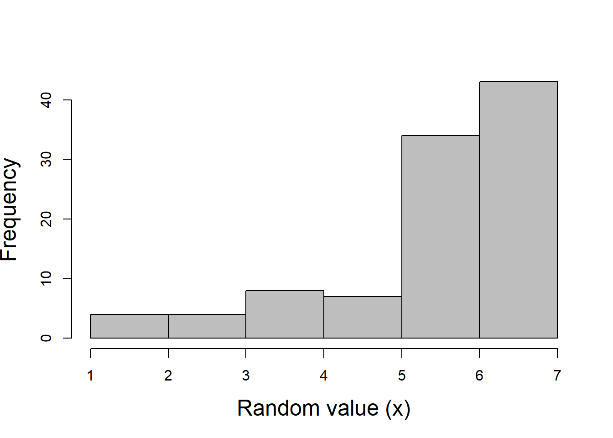

Practical #7 Sampling from a list of values
# Example 1: sample randomly from the values 1:7
f <- data.frame(
ID = c(1:100),
Score = sample(x=c(1:7),size=100,replace = TRUE)
)
# Example 2: set the probabilities for the possible responses
Prob_info <- c(0.02, 0.03, 0.05, 0.1, 0.1, 0.4, 0.4)
g <- data.frame(
ID = c(1:100),
Score = sample(x=c(1:7),size=100,replace = TRUE,prob = Prob_info) # use prob info
)
hist(g$Score, xlab = "Random value (x)", col = "grey", main = "", cex.lab = 1.5, cex.axis. = 1.5)